1. What is the place value of digit 6 in the number 38405.306?
2. Round off 938458 to the nearest thousand.
3. Workout
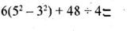
4. After Andrew spent 25% of his money, he still remained with Sh. 1500. How much money did he have to start with?
5. What is the value of x in the equation:
6. A shopkeeper bought 6 bags of rice each weighing 50 kilogrammes. He packed all the rice in half kilogrammes packets. How many packets did he obtain?
7. What is the next number in the sequence: 2, 4, 16, ___
8. Wahome sold a second hand car worth shs. 360.000 and made a profit of 20%. 1 low much did he sell the car?
9. What is the square root of 61⁄4
10. Simplify 4 + 3 (4y - 2) = 13
11. 64048 divide by 16 is equal to?
12. Two bags of sugar weighing 56 kilogrammes and 72 kilogrammes have to be put into small est packets of equal mass. What is the great est mass of each smaller bag obtained by sub dividing the rice equally without a remainder?
13. What is the difference between the largest number and the smallest number that can be formed using the following digits: 7, 6, 0, 4, 2.
14. Use the pie chart below to answer the question below
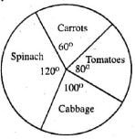
15. A square carpet measures 229⁄16in area. Calculate the size of its length.
16. Arrange the following fractions from the smallest to the largest:
3⁄7, 1⁄2, 4⁄9, 2⁄5
17. Find the value of angle CAB
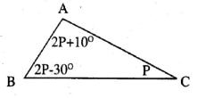
18. Angela spent 2/5 of her income on food, 2/3 of the remainder on school fees and saved the rest. If she saved sh. 2500, what is her monthly income?
19. Find the perimeter of the figure alongside.
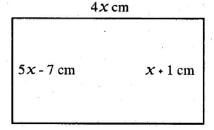
20. Construct a triangle JKL in which line JK = 8cm, KL = 6cm and JKL =90°. Draw a circle that passes through the vertices. What is the radius of the circle?
21. Which of the following sets will form right-angled triangle?
22. Work out
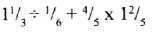
23. Calculate the area of the shaded part in cm2 in the figure below.
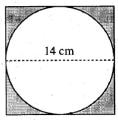
24. Work out:
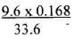
25. Teddy paid sh. 450 for a shirt after he was offered a 10% discount. What was the marked price of the shirt?
26. Find the area of the figure below in ha
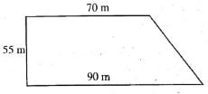
27. Which is the smallest number that should be added to 826492 to make it divisible by 11?
28. Melisa’s mass increased from 64 kilogrammes to 80 kilogrammes. Find the percentage increase.
29. In the year 2004. February 20th was on a Fri day. Which day was 6lh March the same year?
30. Change 30 m/s to km/hr.
31. Otieno had a piece of sugarcane that was 6 metres long. He wanted to divide it equally between two people. How' many times did he cut the sugarcane?
32. Three children shared sh. 200 in the ratio 11:9:5. How much did each get?
33. 12 men can do a piece of work in 18 days. How many more men can do the same work in 6 days?
34. Atieno deposited sh. 20.000 in a bank that paid simple interest at a rate 5% p.a. What amount was in the bank at the end of 2 years?
35. Construct triangle XYZ, XY = 7.2 cm, YZ = 5.8 cm and XZ = 6.2 cm. What is the size of angle XYZ?
36. Find the distance round the figure below in metres.
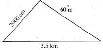
37. Find the volume of the block shown below
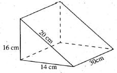
38. What is the relationship of angle x° and y°? They are _____
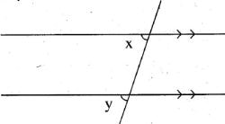
39. Work out:
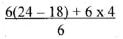
40. An open cylindrical container has a diameter of 14 cm and height 14 cm. What is the surface area of the curved part?
41. Juliet bought an item on hire purchase terms. She paid a deposit of sh 4000. The remaining amount was paid in 11 months paying equal amount of money per month. If the hire purchase price was sh. 26,000. How much was each installment?
42. The following figure is a parallelogram WXYZ. Angle WXYZ = 144°.
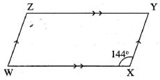
43. Mary arrived at the airport at 10:40 p.m. The plane left the airport 1 hour 50 minutes later. At what time in 24 hour clock system did the plane leave the airport?
44. Which one of the following nets can fold to form a closed cube?
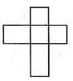
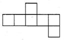
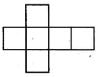
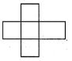
45. The table below shows bus fare to different cities in shillings.
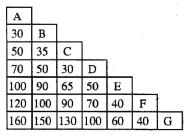
46. The actual length of a road is 5 kilometres. It is represented in a map using 2 cm. What is the scale used in drawing the map?
47. Express 21⁄2% as a fraction in its simplest form.
48. Find the sixth number in the sequence below:
11⁄2, 17⁄8, 21⁄4, ____
49. The average mass of 4 parcels is 8.5 kilogrammes. Three of them weigh 7.6 kg. 7.8 kg and 8.3 kg. What is the median mass?
50. The bar graph below shows how many patients went to Afya Clinic in one week.
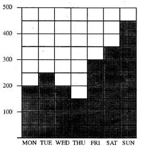